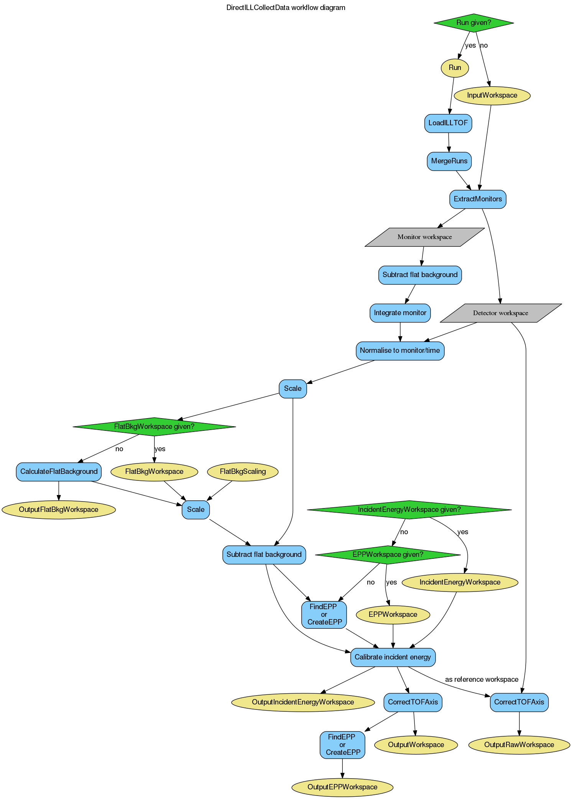

DirectILLCollectData dialog.
Table of Contents
An initial step of the reduction workflow for the direct geometry TOF spectrometers at ILL.
| Name | Direction | Type | Default | Description |
|---|---|---|---|---|
| Run | Input | list of str lists | An input run number (or a list thereof) or a filename. Allowed values: [‘nxs’] | |
| InputWorkspace | Input | MatrixWorkspace | Input workspace if no run is given. | |
| OutputWorkspace | Output | Workspace | Mandatory | The output of the algorithm. |
| Cleanup | Input | string | Cleanup ON | What to do with intermediate workspaces. Allowed values: [‘Cleanup ON’, ‘Cleanup OFF’] |
| SubalgorithmLogging | Input | string | Logging OFF | Enable or disable subalgorithms to print in the logs. Allowed values: [‘Logging OFF’, ‘Logging ON’] |
| EPPWorkspace | Input | TableWorkspace | Table workspace containing results from the FindEPP algorithm. | |
| EPPCreationMethod | Input | string | EPP Method AUTO | Method to create the EPP table for detectors (monitor is awlays fitted) if EPPWorkspace is not given. Allowed values: [‘EPP Method AUTO’, ‘Fit EPP’, ‘Calculate EPP’] |
| SigmaForCalculatedEPP | Input | number | Optional | Nominal sigma for the EPP table when EPPCreationMethod is set to Calculate EPP (default: 10 times the first bin width). |
| ElasticChannel | Input | string | Elastic Channel AUTO | How to acquire the elastic channel. Allowed values: [‘Elastic Channel AUTO’, ‘Default Elastic Channel’, ‘Fit Elastic Channel’] |
| ElasticChannelWorkspace | Input | MatrixWorkspace | A single value workspace containing the elatic channel index. Overrides ElasticChannel. | |
| Monitor | Input | number | Optional | Index of the incident monitor, if not specified in instrument parameters. |
| IncidentEnergyCalibration | Input | string | Energy Calibration AUTO | Control the incident energy calibration. Allowed values: [‘Energy Calibration AUTO’, ‘Energy Calibration ON’, ‘Energy Calibration OFF’] |
| IncidentEnergyWorkspace | Input | MatrixWorkspace | A single-valued workspace holding the calibrated incident energy. | |
| FlatBkg | Input | string | Flat Bkg AUTO | Control flat background subtraction. Allowed values: [‘Flat Bkg AUTO’, ‘Flat Bkg ON’, ‘Flat Bkg OFF’] |
| FlatBkgScaling | Input | number | 1 | Flat background scaling constant |
| FlatBkgAveragingWindow | Input | number | 30 | Running average window width (in bins) for flat background. |
| FlatBkgWorkspace | Input | MatrixWorkspace | Workspace from which to get flat background data. | |
| Normalisation | Input | string | Normalisation Monitor | Normalisation method. Allowed values: [‘Normalisation Monitor’, ‘Normalisation Time’, ‘Normalisation OFF’] |
| MonitorPeakWidthInSigmas | Input | number | 3 | Width of the monitor peak in multiples of ‘Sigma’ in monitor’s EPP table. |
| OutputRawWorkspace | Output | Workspace | Output the merged runs or InputWorkspace as is. | |
| OutputElasticChannelWorkspace | Output | Workspace | Output workspace for elastic channel index. | |
| OutputEPPWorkspace | Output | TableWorkspace | Output workspace for elastic peak positions. | |
| OutputIncidentEnergyWorkspace | Output | Workspace | Output workspace for calibrated inciden energy. | |
| OutputFlatBkgWorkspace | Output | Workspace | Output workspace for flat background. |
This algorithm preprocesses data for the other algorithms in ILL’s time-of-flight data reduction suite. Thus, it is usually the first algorithm to call in the reduction process. The algorithm (optionally) loads data from disk, performs some common basic data reduction steps to the raw data, and provides other workspaces, such as flat background information, which can be used in subsequent reduction steps. The workflow of the algorithm is shown in the diagram below:
Either Run or InputWorkspace has to be specified. Run can take multiple run numbers. In this case the files will be merged using the MergeRuns algorihtm. For example, ‘/data/0100:0103,0200:0202’ would merge runs 100, 101, 102, 103, 200, 201 and 202 from directory /data/.
Some basic reduction steps are done to the input data.
More detailed description of some of these steps is given below.
Note
The initial time-of-flight axis of ILL’s spectrometers has an arbitrary starting point. Therefore, the TOF values in the intermediate workspaces do not correspond to any physical flight distances until they are corrected at step 6.
If Normalisation is set to ‘Normalisation Monitor’, the monitor spectrum specified by the ‘default-incident-monitor-spectrum’ instrument parameter is used for normalisation. If the parameter is not present, the Monitor property is used. A flat background is subtracted from the spectrum (no scaling applied), and it is integrated over the range specified by ElasticPeakWidthInSigmas. The monitor peak is found using FindEPP. If FindEPP fails to find a peak in the monitor spectrum, the entire monitor range is integrated.
Afterwards, the counts are scaled by a factor defined by the ‘scaling_after_monitor_normalisation’ entry in instrument parameters, if present.
A flat time-independent background for subtraction can be given by FlatBkgWorkspace. If this input property is not specified, flat background will be calculated from the detector spectra by (CalculateFlatBackground) using the ‘Moving Average’ mode. The FlatBkgAveragingWindow property is passed directly to (CalculateFlatBackground) as AveragingWindowWidth.
Before subtraction, the background workspace is multiplied by FlatBkgScaling.
The background used for the subtraction can be retrieved using the OutputFlatBkgWorkspace property. This property holds either the same workspace as FlatBkgWorkspace, or a workspace created by CalculateFlatBackground. Note that no FlatBkgScaling is applied to this workspace.
Information on the elastic peaks (position, peak width) is needed for incident energy calibration, as well as for the DirectILLDiagnostics and DirectILLIntegrateVanadium algorithms. This data comes in the form of a EPP workspace which is a TableWorkspace containing columns specified by the FindEPP algorithm.
If no external EPP table is given by the EPPWorkspace property, the algorithm either fits the elastic peaks using FindEPP, or calculates their nominal positions using CreateEPP. This behavior can be controlled by the EPPCreationMode property. The default (‘EPP Method AUTO’) is to calculate the positions for the IN5 instrument, and to fit for any other instrument.
In the calculation case, a nominal peak width can be given using the Sigma property. The peak width is needed for some integration operations. If Sigma is not specified, ten times the first bin width in the workspace will be used.
This step applies to IN4 and IN6 only. Incident energy calibration is disabled for IN5 by default.
Incident energy is calibrated either by giving a new energy as a single-value workspace in IncidentEnergyWorkspace or calculating it from the elastic peak positions. The elastic peak position can be given by EPPWorkspace. If this parameter not specified, FindEPP is used.
The calibrated energy can be retrieved as a single-value workspace using the OutputIncidentEnergyWorkspace property.
The TOF axis is adjusted according to the elastic channel number found in the ‘Detector.elasticpeak’ sample log.
The algorithm has some optional input and output workspaces. Their purpose is to extract some common information from a single data set and use it as input for other algorithms or data sets. An example would be backgrounds extracted from a low temperature measurement which can be used when reducing data taken at higher temperatures.
The optional input and output workspaces come in pairs. If the input workspace is specified, it will be used in the reduction and returned as the corresponding output workspace. If the input workspace is not specified, the needed information is calculated from the current spectra, and returned in the output workspace.
The OutputRawWorkspace property provides an access to a ‘raw’ data workspace in the sense that no normalisation or background subtraction is applied to this workspace. The raw workspace is useful as an input workspace for the DirectILLDiagnostics algorithm.
Example - Fake IN4 workspace as input
import numpy
import scipy.stats
# Create a fake IN4 workspace.
# We need an instrument and a template first.
empty_IN4 = LoadEmptyInstrument(InstrumentName='IN4')
nHist = empty_IN4.getNumberHistograms()
# Make TOF bin edges.
xs = numpy.arange(530.0, 2420.0, 4.0)
# Make some Gaussian spectra.
ys = 1000.0 * scipy.stats.norm.pdf(xs[:-1], loc=970, scale=60)
# Repeat data for each histogram.
xs = numpy.tile(xs, nHist)
ys = numpy.tile(ys, nHist)
ws = CreateWorkspace(
DataX=xs,
DataY=ys,
NSpec=nHist,
UnitX='TOF',
ParentWorkspace=empty_IN4
)
# Manually correct monitor spectrum number as LoadEmptyInstrument does
# not know about such details.
SetInstrumentParameter(
Workspace=ws,
ParameterName='default-incident-monitor-spectrum',
ParameterType='Number',
Value=str(1)
)
# Add incident energy information to sample logs.
AddSampleLog(
Workspace=ws,
LogName='Ei',
LogText=str(57),
LogType='Number',
LogUnit='meV',
NumberType='Double'
)
# Elastic channel information is missing in the sample logs.
# It can be given as single valued workspace, as well.
elasticChannelWS = CreateSingleValuedWorkspace(107)
DirectILLCollectData(
InputWorkspace=ws,
OutputWorkspace='preprocessed',
ElasticChannelWorkspace=elasticChannelWS,
IncidentEnergyCalibration='Energy Calibration OFF', # Normally we would enable this for IN4.
)
# Notably, the TOF axis got adjusted in DirectILLCollectData
preprocessedWS = mtd['preprocessed']
print('TOF offset without corrections: {:.4} microseconds'.format(ws.readX(0)[0]))
print('Corrected TOF offset: {:.4} microseconds'.format(preprocessedWS.readX(0)[0]))
Output:
TOF offset without corrections: 530.0 microseconds
Corrected TOF offset: 380.1 microseconds
Categories: Algorithms | Workflow\Inelastic
Python: DirectILLCollectData.py